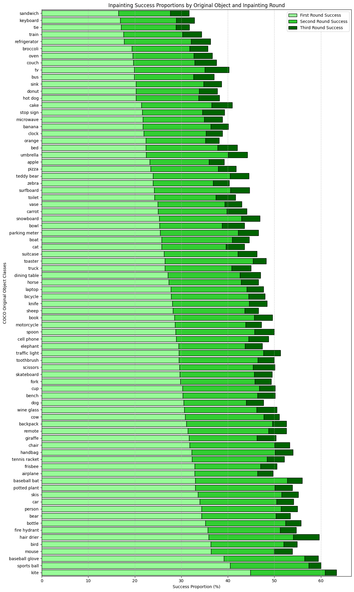
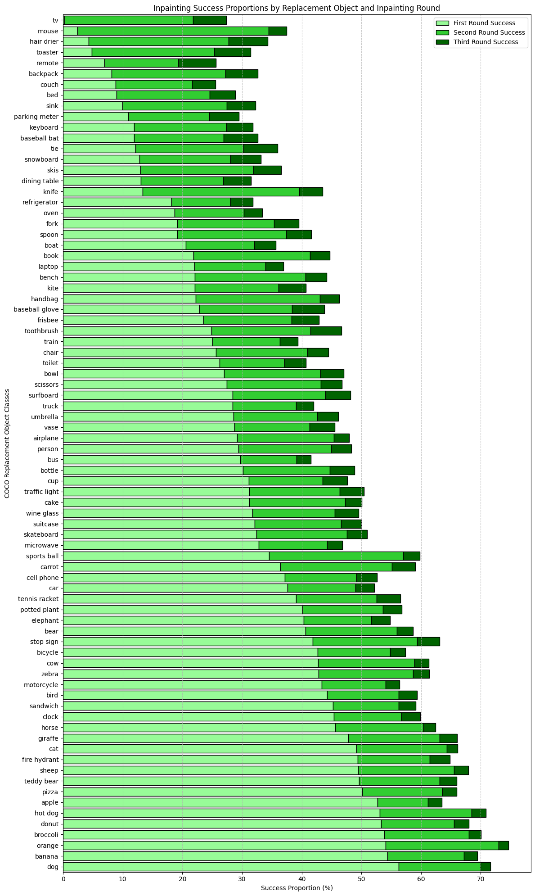
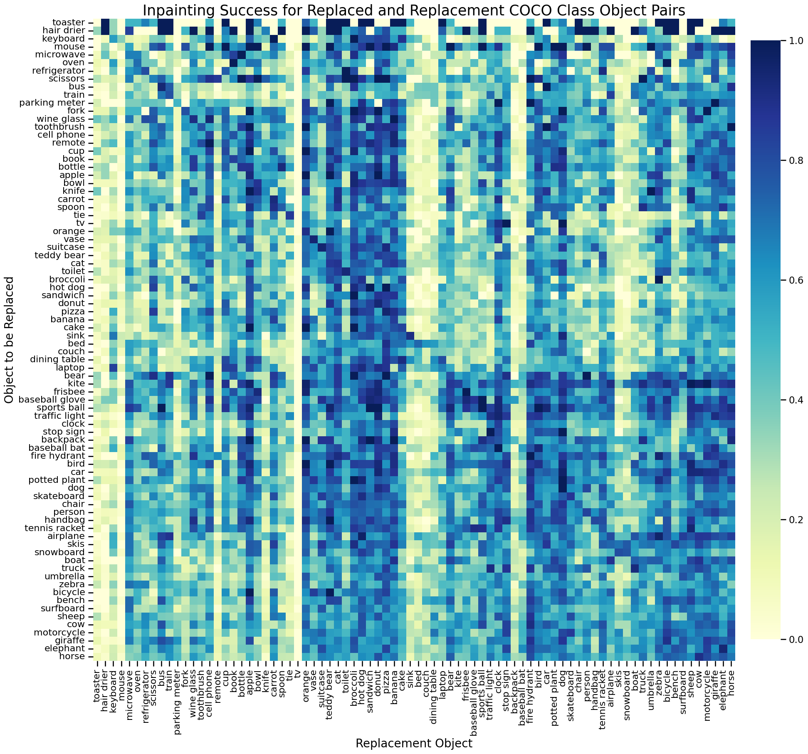
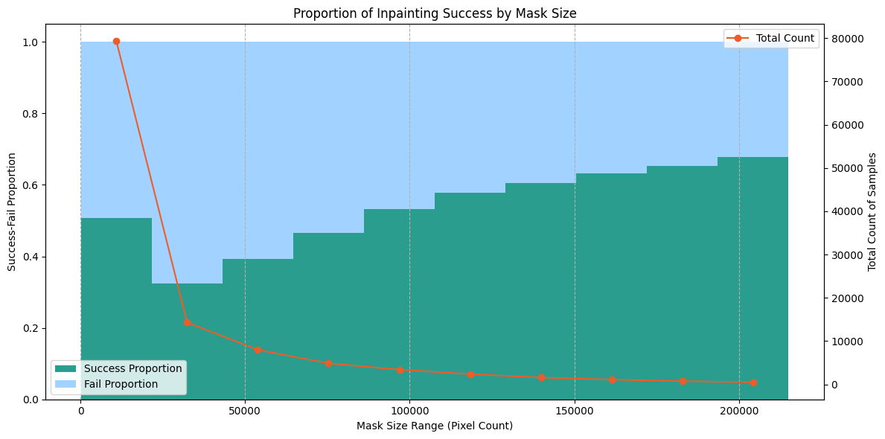

More details on our inpainting procedure and sample code to run the inpainting process can be found here.
We present the results of our cascade-style inpainting pipeline, utilizing Stable Diffusion. The process includes three rounds of inpainting, where failed cases from one round are passed to the next. Success is determined by a YOLOv8x object detector paired with a multimodal large language model for fail-case validation. The following figures provide insights into inpainting success rates, object class distributions, and mask size analysis.
Figure 1 shows the distribution of original objects successfully replaced by inpainting. This figure best demonstrates the contexts which promote successful inpainting. For example, kites are most easily replaced by Stable Diffusion. Kites are typically found in the sky with few adjacent objects, so there is minimal interference from the scene on inpainting performance. We note that many kitchen items and appliances result in low success (e.g., foods, 'refrigerator', 'oven', and 'sink'), likely due to the high number of objects present in kitchen scenes.

Figure 1: Distribution of original object classes in successfully inpainted images by round.
Figure 2 shows the distribution of replacement objects successfully inpainted into COCO scenes. These results are reflective of Stable Diffusion's inherent biases towards specific prompt objects. The model easily inpaints categories like 'dog, 'banana', 'orange', and 'broccoli', while it struggles to inpaint classes like 'tv', 'mouse', and 'hair dryer'. Because we use two object detection methods, we can also identify shortcomings at this step. For instance, the first round inpainting solely utilized YOLOv8x for inpainting, whereas subsequent rounds paired YOLO with the Molmo vision language model. The results indicate that YOLO struggles to detect some classes, like 'tv'.

Figure 2: Distribution of replacement object classes in successfully inpainted images by round.
Figure 3 displays the inpainting success rates for all replaced-replacement object class pairs. Darker cells indicate a higher proportion of inpainting success, while lighter cells represent a higher proportion of failure. We note dense neighborhoods of columns that represent classes that Stable Diffusion inpainting is biased towards. Bright columns demonstrate the opposite effect. The dark diagonal line indicates that the model easily replaces a class with itself. We grouped replacement classes by success proportion using linkage hierarchical clustering, and found that cosine similarity was significantly higher for GLOVE embeddings of categories within clusters vs across clusters (bootstrapped p = .002, 1000 iterations). The cluster with the highest inpainting success included nearly all animal ("giraffe", "horse", "zebra", "dog", "cat", "bird", "bear", "cow") and food ("hot dog", "sandwich", "pizza", "orange", "donut", "banana", "broccoli") categories, while the lowest performing cluster included furniture and household objects ("tv", "couch", "bed", "dining table", "sink"), which are highly context-dependent. A Kruskal-Wallis test confirmed significant differences in success proportions across COCO supercategories (p < 0.001) and reflected identical semantic biases.

Figure 3: Correlation matrix analyzing recovery success rates across various object pairings. This figure provides insights into context-dependent biases and performance trends across different object combinations.
Figure 4 displays the proportion of inpainting success by mask size. Masks were placed into bins based on their area in pixels. Bins with fewer than 400 masks were omitted from the visualization to remove noise. There were very few masks larger than those in the 200,000-pixel bin. We see a general staircase distribution, where larger masks result in increased inpainting success. This supports our hypothesis that smaller masks are more prone to inpainting failure.

Figure 4: Analysis of inpainting success rates based on mask sizes. Smaller masks result in lower success rates due to increased difficulty for diffusion models to generate high-quality inpainting, even with dilation techniques. Bins with fewer than 400 masks were omitted to remove noise.
We provide the sample code to run our inpainting process. To run the code, simply provide the Stable Diffusion inpainting pipeline, an image, mask, and prompt to the inpaint_image_with_cropping function.
View Sample Code (local file)